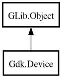

Device
Object Hierarchy:

Description:
[
CCode ( type_id =
"gdk_device_get_type ()" ) ]
public abstract class Device :
Object
Content:
Properties:
Static methods:
Creation methods:
Methods:
- public unowned Device? get_associated_device ()
- public AxisFlags get_axes ()
- public bool get_axis (double[] axes, AxisUse use, out double value)
- public AxisUse get_axis_use (uint index_)
- public bool get_axis_value (double[] axes, Atom axis_label, out double value)
- public DeviceType get_device_type ()
- public unowned Display get_display ()
- public bool get_has_cursor ()
- public bool get_history (Window window, uint32 start, uint32 stop, out TimeCoord[] events)
- public bool get_key (uint index_, out uint keyval, out ModifierType modifiers)
- public unowned Window? get_last_event_window ()
- public InputMode get_mode ()
- public int get_n_axes ()
- public int get_n_keys ()
- public unowned string get_name ()
- public void get_position (out unowned Screen screen, out int x, out int y)
- public void get_position_double (out unowned Screen screen, out double x, out double y)
- public unowned string? get_product_id ()
- public unowned Seat get_seat ()
- public InputSource get_source ()
- public void get_state (Window window, double[]? axes, out ModifierType mask)
- public unowned string? get_vendor_id ()
- public unowned Window? get_window_at_position (out int win_x, out int win_y)
- public unowned Window? get_window_at_position_double (out double win_x, out double win_y)
- public GrabStatus grab (Window window, GrabOwnership grab_ownership, bool owner_events, EventMask event_mask, Cursor? cursor, uint32 time_)
- public List<Atom> list_axes ()
- public List<unowned Device>? list_slave_devices ()
- public void set_axis_use (uint index_, AxisUse use)
- public void set_key (uint index_, uint keyval, ModifierType modifiers)
- public bool set_mode (InputMode mode)
- public void ungrab (uint32 time_)
- public void warp (Screen screen, int x, int y)
Signals:
Inherited Members:
All known members inherited from class GLib.Object